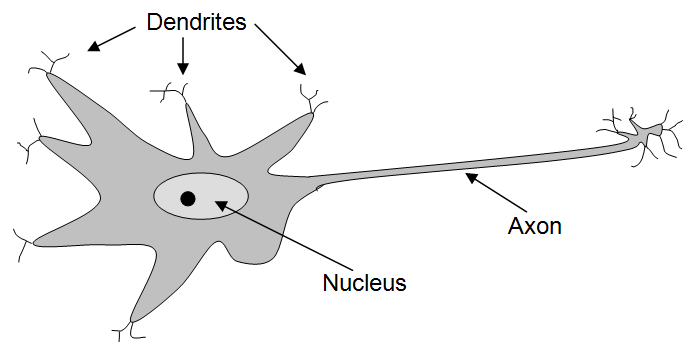
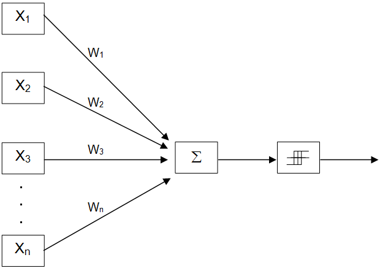
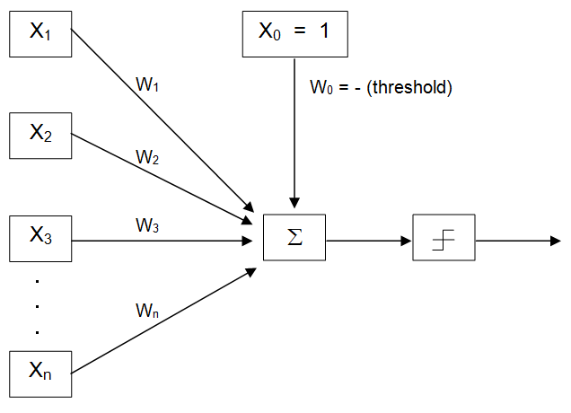

As was discussed in many of the recent advances in AI, such as progress in speech recognition and automatic translation, have been due to both big data and the resurgence of interest in machine learning techniques – systems that learn from examples instead of being explicitly programmed for every eventuality.
In this section we examine one particular approach to machine learning – a simple neural network model called the perceptron – and explore some of its features and limitations. Perceptrons are one of the oldest neural network models and the first to gain widespread popularity in the 1960’s. While perceptrons are no longer used in practice today, this relatively simple, biologically inspired computing model provides a good starting point for getting your head around the notion of machine learning systems.
Human brains are composed of trillions of individual nerve cells, called neurons. The major components of biological neurons are illustrated in . Like all cells, neurons have a nucleus that keeps the neuron alive and functioning. In addition, neurons have a large number of branched protrusions, called dendrites, that receive chemical signals from other neurons. Neurons also have long thin fiber-like appendages, called axons, down which they send electro-chemical signals. At the end of a neuron’s axon are branch-like structures that come in contact with the dendrites of other neurons. In response to the signals it receives from other neurons, a neuron may fire – sending an electro-chemical pulse down its axon in order to transmit signals to other neurons.
Neurons are not in direct physical contact with one another. Instead, there are tiny gaps, called synapses, between the dendrites of one neuron and the axons of others. The signals that pass between neurons must cross these synaptic gaps. This is accomplished by the signaling neuron releasing neurotransmitter chemicals into the synapse. A synapse may be either excitatory or inhibitory. Signals arriving at excitatory synapses increase the likelihood that the receiving neuron will fire. Signals arriving at inhibitory synapses decrease the likelihood of the neuron firing.
Illustration of a brain cell (neuron)
An N-input perceptron
An interesting feature of biological neurons is that they appear to be work in an “all or nothing” fashion – they either “fire” or they don’t. In other words, neurons do not appear to fire at different strengths – they appear to be either “on” or “off”.
A perceptron is a simple processing element that models some of the features of individual neurons. depicts an N-input perceptron. The output of a perceptron is either “0” or “1”. The use of a binary output in the perceptron model reflects the fact that biological neurons appear to either “fire” or “not fire”. The inputs to a perceptron, on the other hand, can be arbitrary real numbers – positive, zero, or negative, with fractions allowed. In , these inputs are indicated by X1 through Xn.
In order to model the fact that biological neurons possess both excitatory and inhibitory synapses, and the fact that these characteristics appear to vary in strength from synapse to synapse, every input received by the perceptron is multiplied by a “weight”. As is the case with the inputs themselves, weights are real numbers. They may be positive, zero, or negative, and fractions are allowed.
Once the inputs have been “weighted”, they are sent to a summation unit that adds them together. In , the box labeled Σ represents this summation unit. The sum of the weighted inputs is then sent to a threshold comparator, the rightmost box in . Every perceptron will have an internal threshold value that controls how sensitive it is to its inputs. If the weighted sum of a perceptron’s inputs is greater than its internal threshold value, then the perceptron will fire (generate a “1”), otherwise the perceptron will not fire (it generates a “0”).
An N-input perceptron with a fixed threshold
Because each input is multiplied by a weight, large positive weights increase the affect of a positive input, while smaller positive weights decrease the affect of an input. A weight of zero causes a perceptron to ignore an input. Negative weights, when applied to positive input values, decrease the likelihood of a perceptron firing. In general, when considering positive inputs, positive weights model excitatory synapses – the larger the weight the greater the excitatory effect. Negative weights model inhibitory synapses.
As a perceptron learns, it adjusts the values of its weights and its internal threshold. In fact, the only way a perceptron can “learn” is to adjust its weights and threshold – those are the only things the perceptron can be said to “know”.
The standard model of a perceptron can be modified slightly, as illustrated in , in order to use a fixed-value threshold comparator. The most common fixed value to compare against is zero. If the weighted sum of the inputs is greater than zero the perceptron fires, otherwise it does not. In order to use a zero value threshold comparator, the “real” threshold will be negated and treated as a weight (W0) attached to an input port ( X0) fixed at “1”. This modification of the model is simply a computational convenience – it allows us to treat the threshold just like any other weight, but it doesn’t change what the perceptron is capable of learning.
In order to understand the way this modification works, think of a standard perceptron, based on the diagram of , that has a threshold of five. This perceptron would fire if:
( X1 × W1 ) + ( X2 × W2 ) + ( X3 × W3 ) + . . . + ( Xn × Wn ) > 5
This statement will be true under exactly the same circumstances that
( 1 × -5) + ( X1 × W1 ) + ( X2 × W2 ) + ( X3 × W3 ) + . . . + ( Xn × Wn ) > 0
is true. In other words, if SUM > 5 is true, then (SUM – 5) > 0 will be true also (e.g., since 6 > 5 is true, so is (6-5) > 0).
Thus, in general, a perceptron will fire when:
( 1 × W0) + ( X1 × W1 ) + ( X2 × W2 ) + ( X3 × W3 ) + . . . + ( Xn × Wn ) > 0
where W0 = - threshold.
Now that we understand what perceptrons are and how they work, it is time to turn our attention to how they can be taught. In order to keep the discussion from becoming overly complex, we will concentrate on teaching a single two-input perceptron to distinguish the difference between two types of objects. Meaningful perceptron-based systems include many perceptrons (not just one) each of which has many inputs (not just two). However, the principles underlying how such systems learn are the same as those described here.
In order for a perceptron to learn, it must be trained. Training involves presenting the perceptron with a group of inputs known as a “training set”. At the beginning of the training process the perceptron makes “random” guesses as to whether or not it should fire when presented with a particular input. Whenever the perceptron guesses wrong its weights, including the threshold W0, will be adjusted by the perceptron learning rule. After being adjusted, the training set will be presented to the perceptron again. If the perceptron generates any incorrect results, the learning rule will be applied again. This process will continue until the perceptron correctly classifies all members of the training set.
illustrates portions of the perceptron learning process. Part (a) of the figure presents the examples that the perceptron will be trained on. The training examples are plotted on a two-dimensional four-by-four grid. The horizontal axis corresponds to the X1 input of the perceptron and the vertical axis corresponds to the X2 input. Thus, in this example, inputs are expected to vary in the range 1 – 4. In such a simple system, there are only 16 possible inputs (1,1), (1,2), (1,3), (1,4), (2,1), (2,2)… etc. Our goal is to teach the perceptron to fire on the two elements located at positions (3,1) and (3,2), and avoid firing on the other training elements. Note that when I say “the element at position (3,1), I mean the element where input X1 = 3 and input X2 = 1.
(a) The items to be classified
(b) Training Pass #1
One false positive, two false negatives
(c) Training Pass #2
One false positive
(d) Training Pass #6
All items correctly classified
A two-input perceptron learning to recognize a linearly separable problem
Before a perceptron is fully trained, it can produce two kinds of incorrect outputs: false positives and false negatives. A false positive occurs when the perceptron fires when it should not have. False negatives occur when the perceptron does not fire when it should have. The perceptrron learning rule distinguishes between these two types of errors.
, Part (b) shows the initial classification efforts of the perceptron when the weights are set to W0 = -3.0, W1 = 0.0, and W2 = 1.0. According to the figure, training elements (3,1) and (3,2) produce false negatives, and element (2,4) generates a false positive. The other elements happened to be classified correctly.
How did this perceptron decide which examples to fire on and which not to fire on?
As we showed above, an N-input perceptron fires when:
( 1 × W0) + ( X1 × W1 ) + ( X2 × W2 ) + ( X3 × W3 ) + . . . + ( Xn × Wn ) > 0
For a two-input perceptron, this simplifies to:
( 1 × W0) + ( X1 × W1 ) + ( X2 × W2 ) > 0
Using the current weight set, W0 = -3.0, W1 = 0.0, and W2 = 1.0, our perceptron will fire when:
( 1 × -3.0) + ( X1 × 0.0 ) + ( X2 × 1.0 ) > 0
Thus, (3,1) doesn’t fire because:
( 1 × -3.0 ) + ( 3 × 0.0 ) + ( 1 × 1.0 )
-3.0 + 0.0 + 1.0
-2.0
is not greater than zero.
Likewise, (3,2) doesn’t fire because:
( 1 × -3.0) + ( 3 × 0.0 ) + ( 2 × 1.0 )
-3.0 + 0.0 + 2.0
-1.0
is not greater than zero.
Training element (2,4), on the other hand, does cause the perceptron to fire because:
( 1 × -3.0) + ( 2 × 0.0 ) + ( 4 × 1.0 )
-3.0 + 0.0 + 4.0
+1.0
is greater than zero.
Given these false negatives and false positives we can use the perceptron learning rule to modify the weight set.
The two-input perceptron learning rule can be expressed in the following way:
(a) Find all of the false negative training examples (cases where the perceptron should have fired, but did not)
(a.1) Add up all of the X0 values of the false negatives, call this sum FNX0
(a.2) Add up all of the X1 values of the false negatives, call this sum FNX1
(a.3) Add up all of the X2 values of the false negatives, call this sum FNX2
(b) Find all of the false positive training examples (cases where the perceptron should not have fired, but did)
(b.1) Add up all of the X0 values of the false positives, call this sum FPX0
(b.2) Add up all of the X1 values of the false positives, call this sum FPX1
(b.3) Add up all of the X2 values of the false positives, call this sum FPX2
(c) Compute the learning gradient in the following way
(c.1) gradient0 = FNX0 – FPX0
(c.2) gradient1 = FNX1 – FPX1
(c.3) gradient2 = FNX2 – FPX2
(d) Multiply the learning gradient by the learning rate. The learning rate is a constant that will affect how quickly the system learns, but not the final answer obtained. We will use 0.22 as our learning rate.
(d.1) delta0 = 0.22 x gradient0
(d.2) delta1 = 0.22 x gradient1
(d.3) delta2 = 0.22 x gradient2
(e) Compute the revised (new) perceptron weights by adding the deltas to the current (old) weights.
(e.1) W0 (new) = W0(old) + delta0
(e.2) W1 (new) = W1(old) + delta1
(e.3) W2 (new) = W2(old) + delta2
An amazing characteristic of the perceptron learning rule, proven by Rosenblatt in the early 1960’s, is that if it is theoretically possible for a perceptron to learn the training set you have presented it with, this algorithm will converge on that solution. In other words, if you run your training examples on the perceptron, modify the weights according to the learning rule, and then repeat the process over and over, eventually all examples will be properly classified. If the training set is “perceptron learnable”, the learning process is guaranteed to eventually halt.
Another remarkable feature of the perceptron learning rule is that it works no matter what values are chosen for the initial weights. Lucky guesses for the initial weights might get you to the solution faster than unlucky guesses, but either way the learning rule will “converge” on the solution (if there is one) in the end – regardless of how good or bad the initial guesses were.
Now, let’s apply this learning rule to the situation illustrated in (b) to generate a new weight set. Again, (3,1) and (3,2) are false negatives and (2,4) is a false positive. The current perceptron weights are W0 = -3.0, W1 = 0.0, and W2 = 1.0 .
Step (a): Sum the components of all the inputs leading to false negatives:
Step (b): Sum the components of all the inputs leading to false positives:
Step (c): Compute the learning gradient.
Step (d): Compute the changes to the weight set. Use a learning rate of 0.22.
Step (e): Compute the revised perceptron weights.
Thus, after one pass through the training set, the perceptron weights have been changed from W0 = -3.0, W1 = 0.0, W2 = 1.0 to W0 = -2.78, W1 = 0.88, and W2 = 0.78 . (c) illustrates the state of the perceptron at this point. The perceptron fires on training examples (2,4), (3,1) and (3,2); and does not fire on any of the other examples. All training examples save false positive (2,4) are classified correctly.
At this point, the perceptron learning rule would be applied again and the weights updated. After six repetitions of the training process, all training examples would be correctly classified. This situation is illustrated in (d).
Ok, that was a lot of math. Let’s stop and take a breath for a moment.
Before we conclude this section on perceptrons, I’d like to address two related subjects: what it means for a problem to be “perceptron learnable”, and how previously trained perceptrons respond when presented with inputs they have not seen before.
The point was made earlier that by using the perceptron learning rule we can teach a perceptron anything it can theoretically learn – anything that is “perceptron learnable”. What does that mean?
Well, for a two-input problem, such as the one illustrated in , the problem must be linearly separable. Linearly separable means that if you plot the elements of the training set on a two-dimensional grid, you must be able to separate the two output groups by a single straight line. Our example was learnable because it was linearly separable. In fact, if you look back at Parts (b), (c), and (d) of you can see the line, or decision surface, that separates the two output categories. The decision surface has a positive side (above) and a negative side (below). Any input lying above the decision surface will cause the perceptron to fire. Any input lying on or below the decision surface will cause the perceptron to fail to fire. Thus, the orientation of a perceptron’s decision surface completely describes the knowledge possessed by that perceptron.
This restriction on what perceptrons can learn can be extended to perceptrons with more than two inputs. For a three-input perceptron, whose inputs can be plotted in a three-dimensional space, the two output categories must be separable by a 2-d plane. In general, for an N-input perceptron the two output categories must be separable by an N-1 dimensional hyper-plane.
An understanding of decision surfaces lets us accurately predict how a trained perceptron will react when presented with a “new” input that it has never seen before. If that input is above its decision surface, the perceptron will fire, otherwise it will not. Referring back to (d) we can say with assurance that presenting item (4,2) to the perceptron will cause it to fire. Similarly, we can know that item (2,3) will not cause the perceptron to fire.
Understanding a perceptron’s reaction to items outside the training set is very important. Perceptrons, and other neural network based approaches to artificial intelligence are generally only useful when they can, in some sense, generalize what they have learned.
For example, say we wanted to teach a neural network based system to be able to distinguish between men and women from photographs of their faces. We would digitize a large number of male and female photographs, and then train the net on those photos. What we would expect at the end of the process is that the network has learned to distinguish between male and female facial features. We would be extremely disappointed if the only males and the only females the system could reliably classify were those it had been shown in the training set.
Exercises for
Will a two-input perceptron fire on X1 = 3, X2 = 5, when W0 = -20, W1 = 10, and W2 = -1 ? Show the mathematics behind your answer.
Will a two-input perceptron fire on X1 = 2, X2 = 5, when W0 = -20, W1 = 10, and W2 = -1 ? Show the mathematics behind your answer.
Will a three-input perceptron fire on X1 = 2, X2 = -2, X3 = -2 when its weights are W0 = 10, W1 = -5, W2 = 5, and W3 = -10 ? Show the mathematics behind your answer.
Apply the perceptron learning rule to the problem illustrated in (c) in order to generate a new weight set. Assume the current weights are: W0 = -2.78, W1 = 0.88, and W2 = 0.78 . All training examples are classified correctly except for a false positive on item (2,4). The learning rate is 0.22 .